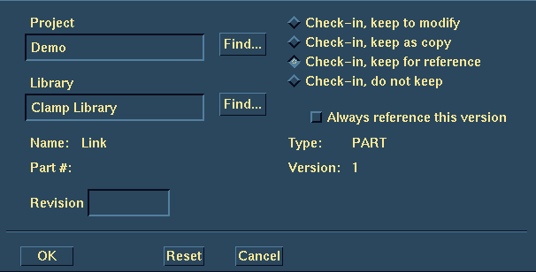
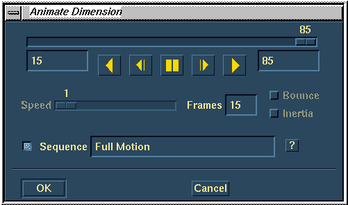

(Demonstrator 2)
| Next Step | Return to Table of Contents | Previous Step |
Manage Bins
Select the Link
Select Check in
Select Check in keep for reference
Library Name Clamp Library
OK

Dismiss the Manage Bins form and await the model file save
While Demonstrator 1 turns the Link into a Sheet Metal part, Demonstrator 2 does the following:

Modify and Animate the 85 deg angular dimension. From 15 -> 85 degrees
Set the Frames to 15 and save the Sequence
Create the Sequence


Animate the Full Motion Sequence. Take default options
| Next Step | Return to Table of Contents | Previous Step |